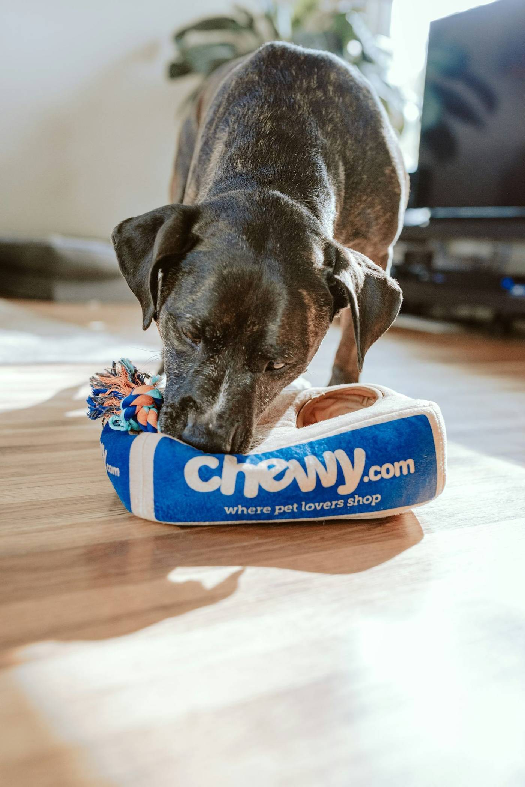

Ciudad y Puerto / San Agustín, C.P. 55130. Martes a sábado de 11:00 a 19:00 y domingo de 11:00 a 14:00; lunes cerrado, según Google.
Agendar por WhatsApp55 3575 7646No hay un tarifario oficial publicado. Estos son servicios habituales de un consultorio veterinario; confirma disponibilidad al llamar.
Revisión y seguimiento. Consulta para confirmar disponibilidad.
Medicina preventiva. Pregunta el esquema al agendar.
Servicio de baño y corte, según disponibilidad.
Procedimientos quirúrgicos, incluida la esterilización, según agenda. Conviene llamar antes: en la ficha aparece un solo veterinario.

Este listado es el de Avenida Santa Prisca 322, C.P. 55130. El teléfono publicado es el 55 3575 7646.
No es Medical Vet (Centro Integral Veterinario) de Blvd. Ecatepec 94, Los Laureles, que tiene sitio propio en centrointegralveterinariomv.com.mx. Tampoco es el Centro Integral Veterinario de Av. Valle del Don, Granjas Independencia, ni CIVE Ecatepec.
No se encontró un sitio oficial de este consultorio de Santa Prisca. Esta página es un mockup.
✔ Lunes cerrado
✔ Tel. 55 3575 7646
Calificación 4.8 ★ en Google
★★★★★
“Encontre al.veterinario y decidi ir xq tenia buenas opiniones. Al llevar a consulta a mi perrita, nos explico el procedimiento q tenia q hacerle y la Opero a mi de unos quistes y todo salio muy bien, te explica las cosas como son y le da seguimiento Lo recomiendo ampliamente ya que para alguien que esta buscando un buen doctor lo visite, ya q mi perrita está sana con nosotros y eso es lo más importante,espero no ir seguido, pero siempre es bueno tener a un médico de confianza.”
★★★★★
“El veterinario es muy amable, su consultorio se ve limpio, y siempre explica cualquier duda en el momento, es muy atento y cuidadoso con los animales”
★★★★★
“Recién hemos empezado a ir con el Veterinario Rafael para la aplicación de vacunas de mis dos perritas y hoy para baño de ambas. El consultorio siempre está limpio, con desinfección del área entre la atención de cada paciente. El Vet es muy cordial y humano en su trato y atención y con precios razonables. Bastante recomendable!”
★★★★★
“Excelente trabajo del Dr. Rafa, profesional y responsable, explica con claridad y respeto. El servicio de baño y corte le encanta, cuenta con equipos adecuados para la atención de nuestros animalitos de compañía y en excelentes condiciones de limpieza. Altamente recomendable. Sugiero llamar antes para agendar cita pues es el único veterinario hasta dónde sé y si tiene procedimiento no podría atenderles.”
Datos de contacto, horario y ubicación.
No se encontró un sitio oficial de este consultorio en Santa Prisca. El sitio centrointegralveterinariomv.com.mx corresponde a Medical Vet, en Blvd. Ecatepec 94, otro negocio. Esta página es un mockup.
Según Google: lunes cerrado; martes a sábado de 11:00 a 19:00; domingo de 11:00 a 14:00.
Av. Santa Prisca 322, manzana 052, Ciudad y Puerto / San Agustín, C.P. 55130, Ecatepec.
Al 55 3575 7646.
La ficha consultada muestra 4.8 de 5 a partir de 46 opiniones. La hoja del proyecto tenía 55.
📍 Dirección: Av. Santa Prisca 322, manzana 052, Ciudad y Puerto / San Agustín, 55130 Ecatepec de Morelos, Méx.
📞 Teléfono: 55 3575 7646
| Lunes | Cerrado |
| Martes a sábado | 11:00 – 19:00 |
| Domingo | 11:00 – 14:00 |
Llama o escribe por WhatsApp al 55 3575 7646. Conviene confirmar cita, sobre todo si hay un procedimiento en curso.
Agendar por WhatsApp